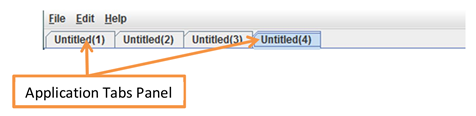
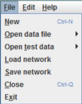
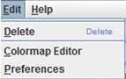
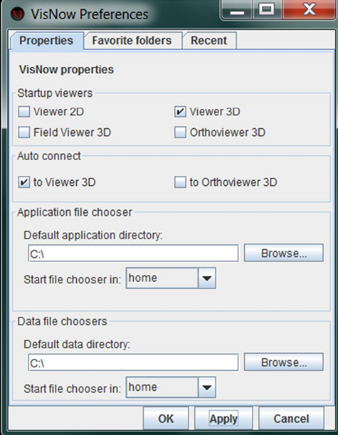
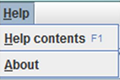

|
|
|
MENU BAR AND TABS
Menu bar consists of

Menu File contains:

Menu Edit contains:

Preferences Window consists of Properties Tab, Favorite folders Tab and Recent Tab. Properties Tab allows to select which viewers (Viewer2D, Viewer3D, Field Viewer 3D, Orthoviewer 3D) run on startup and which viewer (Viewer 3D or Orthoviewer3D) is allowed to make automatic connections with VNGeometry ports. It also enables to set default application directory and default data directory for Application file choosers and Data file choosers.

Help menu opens help window of current module.
